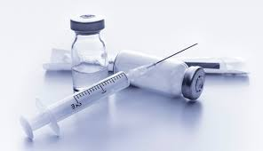

EL BUEN USO DE LOS SUPLEMENTOS
Para ello repartiremos la dosis a lo largo de la jornada entre las comidas principales. A la hora de tomar un suplemento u otro hay que respetar unos momentos específicos para ingerirlos. Por ejemplo, algunos como el cartílago de tiburón o los aminoácidos deben tomarse dos horas antes o después de comer.
¿Cuando es necesario utilizar suplementos?
El uso de los suplementos son necesarios en situaciones tales como, el embarazo, el crecimiento acelerado en la infancia y la adolescencia, el ejercicio físico intenso, la convalecencia de enfermedades o la presencia de circunstancias como el frio intenso, el calor extremo, la sobrecarga de trabajo intelectual o el estrés aumentan sus necesidades
SUPLEMENTOS RECOMENDADOS


Proteina:
Fortalece el sistema inmunológico. Disminuye la ansiedad. Incrementa los niveles de serotonina. Ayuda a aumentar la masa muscular.
Creatina:
La creatina ayuda a que puedas hacer más repeticiones de un ejercicio, a levantar más peso o a aguantar más tiempo entrenando. Con todo ello, conseguirás unos músculos más fuertes, más fibrados y con menor cantidad de grasa
Aminoacidos:
Los aminoácidos, como cualquier otro nutriente que ingerimos o generamos, sirven para formar, potenciar y reparar estructuras que necesitamos para vivir, ya no solo para recuperarnos muscularmente. Del mismo modo, actúan como neurotransmisores para transportar información entre células nerviosas.
NO AL USO DE ANABOLICOS

¿Que son los anabolicos?
¿Que son y para qué sirven los anabólicos? Los esteroides anabólicos son variaciones sintéticas de la hormona sexual masculina testosterona. Los médicos pueden recetar esteroides para tratar varios trastornos médicos, pero algunos atletas y fisioculturistas los usan en forma indebida para mejorar su rendimiento o su apariencia física.
EFECTOS SECUNDARIOS DEL USO DE ANABOLICOS
Cambios importantes y erráticos del estado de ánimo. Comportamiento irracional. Incremento de la agresividad (rabia o cólera por esteroides) Irritabilidad. Aumento del deseo sexual (libido) en los hombres y en ocasiones en las mujeres. Depresión.